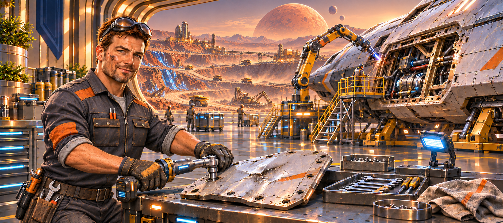

STAR FRONTIER - Service artFrontier
Refuel 1881 × 836Repair 1881 × 836Market 1881 × 836 Mining
Refuel 1881 × 836
Repair 1881 × 836Market 1881 × 836 Industrial
Refuel 1881 × 836Repair 1881 × 836Market 1881 × 836 Science (planet)
Refuel 1881 × 836Repair 1881 × 836Market 1881 × 836 Military
Refuel 1881 × 836Repair 1881 × 836Market 1881 × 836 RangerBase
Refuel 1881 × 836Repair 1881 × 836Market 1881 × 836 Trade
Refuel 1881 × 836Repair 1881 × 836Market 1881 × 836 Science (station)
Refuel 1881 × 836Repair 1881 × 836Market 1881 × 836 Medical
Refuel 1881 × 836Repair 1881 × 836Market 1881 × 836